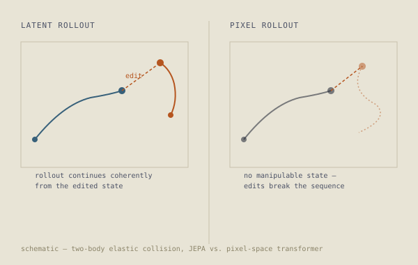

About
I trained as a physicist and moved into data science and engineering, but the underlying question remained the same: how does a system represent the structure of the world it observes?
Physics gave me a way to think about state, dynamics, governing variables, and models of physical behaviour. Engineering taught me to build computational systems, test assumptions, and care about what happens when a system encounters conditions outside those it was designed for.
My current research work brings these perspectives together through world models, representation learning, and physics-informed machine learning. I build controlled experiments to examine how learned representations capture dynamics and what those representations allow a model to do beyond prediction.
My work is driven by a simple approach: formulate a precise question, build the smallest system that can test it, and investigate where the model succeeds, fails, or behaves unexpectedly.
Research
Selected Work
World Models and Intervention in Latent Space

A controlled study of learned representations using a two-body elastic collision environment. I compare an autoregressive Transformer operating on image sequences with a JEPA-style model that predicts in a 64-dimensional latent space.
The experiment examines a question that predictive error alone cannot answer: what does a model's internal representation allow us to do? I test this by intervening directly on the latent state during rollout and examining whether the resulting dynamics remain coherent.
The project is an ongoing investigation into representation, latent dynamics, intervention, and the relationship between prediction and reasoning.
Read the full write-up →Astrometric Study of WDS 18380+4151

Ten CCD observations of a double-star system with the Great Basin Observatory, combined with historical measurements and Gaia DR3 astrometric data.
The analysis examines the evidence for the system being physically associated rather than an optical alignment. The available observations remain insufficient for a definitive conclusion, illustrating the role of continued measurement in resolving astronomical systems.
Read the paper (PDF) →Coronal Mass Ejections and Solar Energetic Particles
Analysis of 152 solar energetic particle events using SOHO/LASCO observations across solar cycles 23 and 24. The study examined changes in CME properties across cycles and used Type II radio burst band-splitting to estimate coronal Alfven speeds.
Time-Series Photometry of a Variable Star
Multi-band B, V, and I photometry used to construct light curves and phase-resolved colour-magnitude diagrams, examining the behaviour of a pulsating star across its variability cycle.
Background
-
Data EngineerMastech Digital, ChennaiBuilding production data and AI systems, with current work spanning machine learning systems, data infrastructure, and computational workflows.
-
Engineer, Data PlatformsTata Communications, ChennaiWorked on large-scale data platforms and production data systems, developing experience in distributed processing, reliability, and data infrastructure.
-
M.Sc. Data ScienceSRM University · CGPA 9.05/10Advanced training in machine learning, statistical modelling, data analysis, and computational methods.
-
B.Sc. PhysicsThe American College, Madurai · CGPA 8.15/10Training in classical mechanics, quantum mechanics, statistical mechanics, and mathematical methods, providing the foundation for my current work in scientific machine learning.